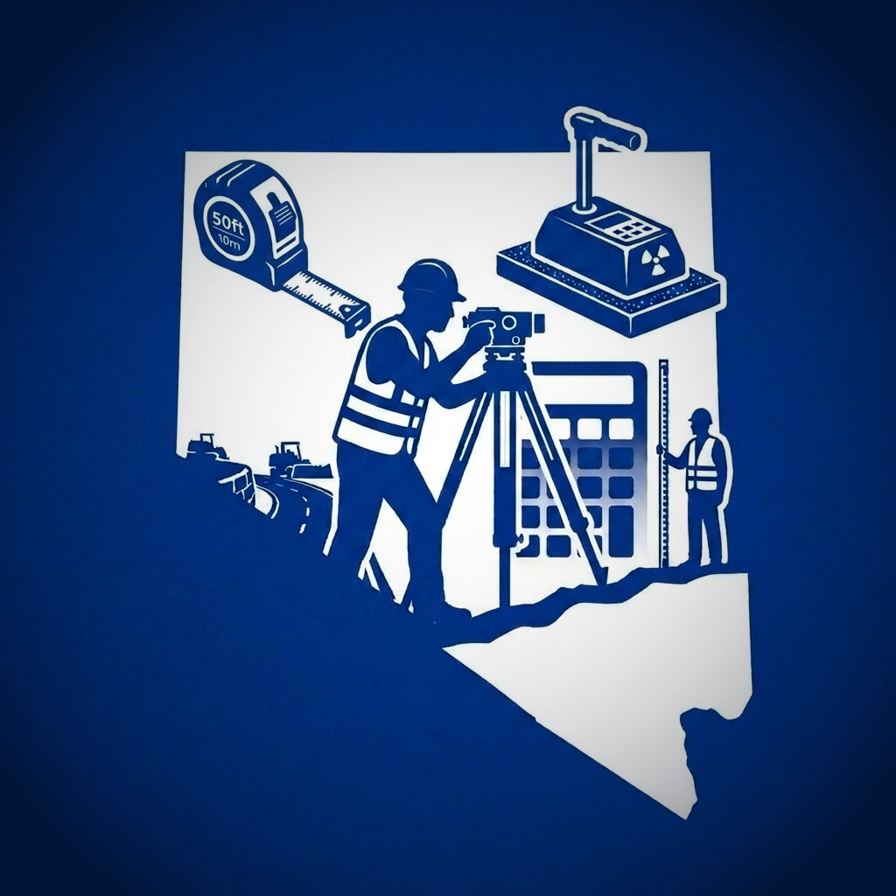

🌙 Dark

Field Tools
📁
Project Manager
View, export & import all project data
›
🗂️
Material Reference
HMA, concrete, granular & Proctor data by contract
›
🧭
Station / Offset
Live station & offset from GPS · navigate to a station
›
📸
Station Photos
Photos stamped with station, offset & description
›
📡
Survey Tools
Leveling · Control Points · CSV Converter
›
🔍
Inspection Tools
Area & Volume · HMA Tool · Bid Items
›
🧪
Testing Tools
Thinlift Compaction (T335) · Soil Compaction (T103G)
›
‹ Home